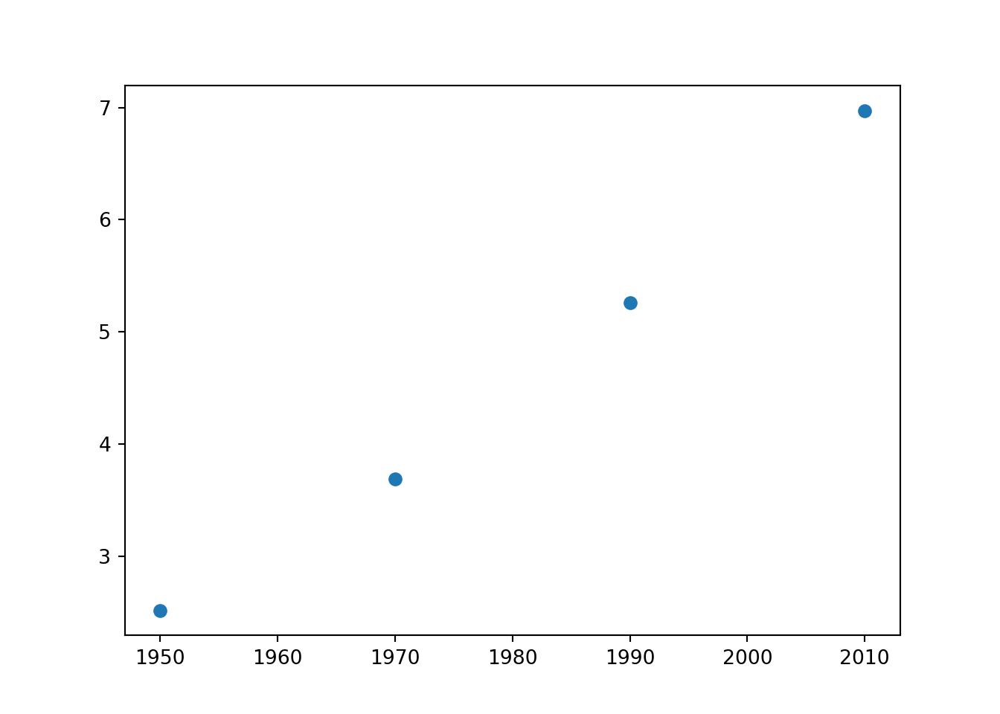
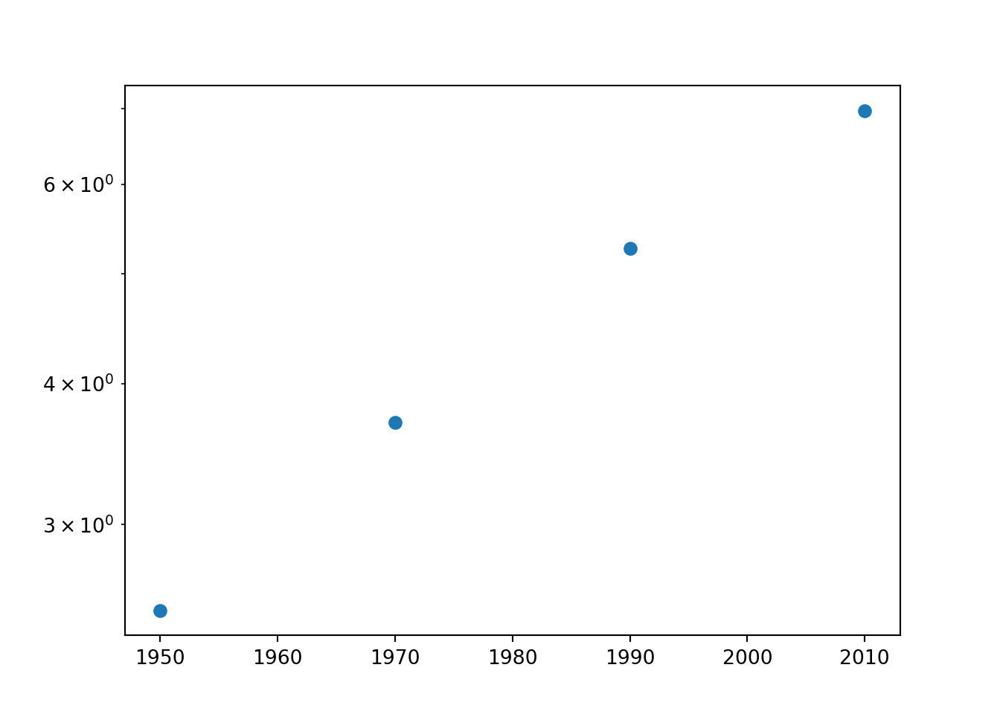
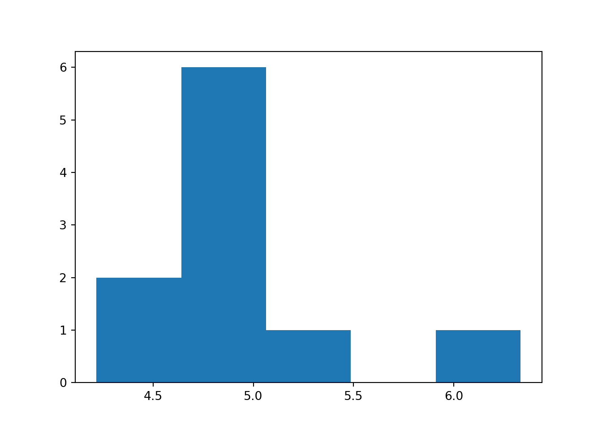

range()
plt.scatter(year, pop) plt.show()

pop
plt.yscale('log')
plt.scatter(year, pop) plt.yscale('log') plt.show()

import numpy as np data = np.random.normal(5, 1, 10) plt.hist(data, bins = 5) #> (array([2., 6., 1., 0., 1.]), array([4.21686567, 4.64030697, 5.06374826, 5.48718956, 5.91063086, #> 6.33407216]), <BarContainer object of 5 artists>) plt.show()
